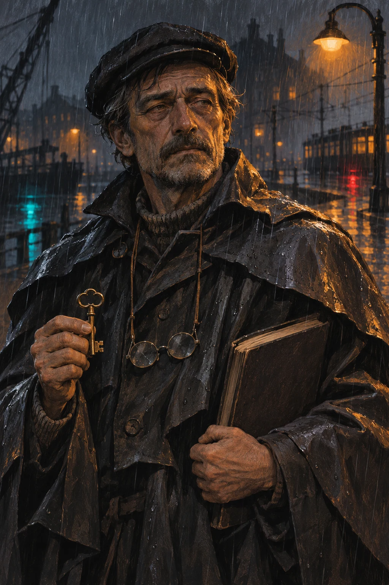

Найти, где Савелий прячется в порту, и понять, что случилось на Сухом причале в ночь 12 октября.
Матвей Корд

Григорий СтельХельга МеллерКлара Рун
Если партия изменила план
Игроки раскрыли тайну раньше
Сравним лист опознания с меркой Терезы и попросим разрешения сверить собственноручную запись в книге постояльцев. Доступные свидетельства — Лист опознания, Мерка Терезы, Книга постояльцев «Ожидания». Рост покойного не совпал с меркой Руна. В книге есть и более поздняя запись живого Савелия. Сверяем подпись из книги с распиской кассира. Показываем семье мерку и более позднюю запись живого Савелия. Семья снимает его имя с опознания; где он сейчас и кому положена страховка, остаётся выяснить.
Партия уступила поле
Артель удержала навес и выиграла дистанцию; след Руна на время потерян. На соседнем причале просим назвать последнего видевшего лодку. Ищем свидетеля на следующем причале и честно заносим потерянную дистанцию. Если опоздаем, говорим с тем, кто остался, без принудительной дуэли.
Трамвай № 3, 17:40, конечная — Сухой причал. Билет пробит в кассе и уже мягкий от дождя. Краны стоят в воде, как цапли. Над воротами артели красный неон «КОРД И ТОВАРИЩИ. ПОГРУЗКА» расползается по лужам длинными буквами. На воротах, на размокшей бумаге, мокрое лицо: кто-то ищет человека.
Подготовка и роли
ЛИСТ ВЕДУЩЕГО, продолжение (начало — в заметке вечера 1). Подозрение: к концу вечера 6 две улики одного пути (А, Б, В) и в вечере 6 Кларе не сказали правду; или отряд обвинил Клару перед Фальком, положив две улики одного пути (дела он не откроет, Клару вызовут и отпустят); голое обвинение не в счёт, обвинение по телефону — звонок «М». Матвей знает — увидел лист опознания рядом с объявлением о брате: △ больше без тайных +2, на крыши артель не идёт. Хельга знает — увидела путь В: □ дальше только временем, на крышах часовщики стреляют в Клару. Доверие — Подозрение, или Савелию отдали его зонт, или в вечерах 6–7 ему показали записку Клары или вслух сказали подозрение; «нет», если в вечере 7 его дотащили до ворот. Видели отряд — команды, бывшие раньше в вечере 6. На крышах в команде: 3 игрока — по одному, 4–5 — по двое, 6–8 — по трое (−1, если в театре отряд был первым). Ещё для карты: звонили Фальку (вечер 7, сцена 1) — он на 2 раунда раньше; ключ башни (сделка вечера 5) — запереть в сцене 1 вечера 8; рана Савелия — выстрел в сцене 2 или ворота в сцене 3 вечера 7; Слова — собранные пути и зонт с утиной головой. Карта — в заметке вечера 8. ЕСЛИ ПОШЛИ НЕ ТУДА — короткие сцены без улик и без хода фишек. Квартира Рунов на Колокольной: Клара показывает кабинет мужа: «Здесь всё, как он оставил. Нового нет. Благодарю, что зашли». «Точный час»: Хельга у стойки: «Полис без бумаги не показываем. Принесите живого — поговорим». Участок: Фальк через платок: «Опознание закрыто. Вдова опознала». ВЕЧЕР 2: старт ○ 0 (+2 после П, +1 после Ч, +1 за ✓), □ 1, △ 3; осведомитель △ +2 после сцены 2. Савелий ушёл на седьмом трамвае в 19:30. Стель не знает Кларе имени. Не называйте вывод пути вслух.
lada-osher
roman-ivren
stasya-gran
Сцена 1 · 45 минут
Ворота артели
Старт вечера: ○ 0, □ 1, △ 3. Добавьте ○ +2 после вчерашнего «П» (+1 после «Ч») и ○ +1 за вчерашний ✓. Кто-нибудь вписывает в строку «Ваши билеты»: № 3, 17:40. Шестеро грузчиков в мокром брезенте стоят под жестяным козырьком, у забора мёрзнут двое в серых плащах: их не пускают. Если за столом Зоя Тарх, она узнаёт этих двоих: ехали с вами в одном вагоне и сошли остановкой раньше. Неон «КОРД И ТОВАРИЩИ» дрожит в луже под ногами. На воротах объявление о пропаже брата: ○ +1. Матвей выходит к калитке, крюк на ремне: «Мой брат ушёл к Руну двенадцатого и не вернулся. Мне не нужна полиция. Мне нужен Рун». Если вчера гнались через похоронную толпу: «Это вы бегали по кладбищу. Ещё раз. Зачем?» Верный вопрос: «Что ваш брат делал здесь двенадцатого?» — «Шёл к Руну. У него записано: девять вечера, навес три» (○ +1; снимок с похорон раз за вечер заменяет вопрос). Увидев снимок, Матвей мрачнеет: «Значит, живой. Тем хуже ему». Если отряд кладёт копию листа опознания рядом с объявлением, Матвей знает: долго молчит — «Пальто от Бранда. Я ему его подарил», — отсылает людей (△ −2) и пропускает к шкафу. Если он пускает, то коротко: «Полчаса. Потом мои придут сами». Конец сцены: □ +2, △ +1.
Выборы
Говорить честно: «Мы ищем Руна для вдовы» — и просить полчаса.
Показать снимок с похорон: Матвей видит, что Рун жив.
Заплатить за проход: деньги на виду, △ +1.
Пройти силой: встреча «Артель у навеса» — проход держат один грузчик артели и двое наёмных ловцов (на 5–8 игроках больше), шум △ +2.
Обойти ворота по баржам вдоль канала: тихо, но □ +1.
Проверка и путь без броска
Убеждение СЛ 13: Матвей пускает на полчаса; провал — пускает, но двое грузчиков идут следом, △ +1. Без броска: честный ответ «Мы ищем Руна для вдовы» или снимок даёт тот же пропуск. Объявление и вопрос двигают ○ без броска. Конец сцены всегда: □ +2, △ +1.
Если не получилось
Если отряд уходит от ворот, Стель сам выходит к ограде с лампой и зовёт: «Вы к шкафу? Идите водой». Тогда отряд идёт по баржам: □ +1, шума нет, а Матвей молча провожает их взглядом.
Сцена 2 · 45 минут
Шкаф находок
Будка Стеля на восточном краю настила: жёлтое окно, лампа дрожит в луже у порога, на гвозде клеёнчатая накидка, шкаф с бирками. Стель смотрит поверх очков: «Находка ждёт хозяина год и один день. Потом становится моей. Записано». Журнал он читает вслух, ведя пальцем по мокрым строчкам: «Двенадцатое. Двадцать пятьдесят два — дама под чёрным зонтом спросила навес три. Двадцать один ноль восемь — хлопок. Думал — доска. Записано». Страницу можно переписать: ○ +1. В шкафу — дамский зонт с утиной головой на ручке и биркой «13.X, у навеса 3, утро»: ○ +1. Верный вопрос: «Кто ещё спрашивал этот зонт?» — «Он. Позавчера ночью. В коротком дождевике, рукава до косточек. Не дал. Зонт дамский — пусть дама и придёт. Записано» (○ +1). Услуга: вытащить размокшие чемоданы находок из-под дождя — ○ +2, □ +1, △ +1. Зонт отдаётся под подпись героя «передам хозяйке». К дальнему краю причала идёт последний портовый трамвай: Роман знает его расписание. Конец сцены: □ +2, △ +1; осведомитель △ +2, грузчик Шпиль бежит к Матвею.
Выборы
Попросить Стеля прочитать журнал и переписать страницу.
Подписать «передам хозяйке» и взять зонт, либо оставить его в шкафу.
Помочь с чемоданами: ○ +2, но □ +1 и △ +1.
Показать снимок и дать Стелю сказать больше.
Срезать путь: последний портовый трамвай к дальнему краю причала.
Проверка и путь без броска
Проницательность СЛ 12: Стель знает больше, чем читает («Его отца я знал»); провал — он замолкает до конца сцены. Без броска: снимок с похорон, и Стель снимает очки: «Живой. Слава богу». Срезанный путь: Роман с книжкой расписаний — без броска, ○ +2; иначе Ловкость СЛ 12 — вскочить на подножку; успех ○ +2, провал ○ +1 и △ +1.
Если не получилось
Если Стель обижен, зонт и журнал остаются в шкафу: страницу назавтра читает его сменщик через Матвея в вечере 5, а фишка ○ за неё сегодня не двигается. Слова Стеля о ночном посетителе в коротком дождевике записаны со слуха и остаются.
Сцена 3 · 45 минут
Кабина «Журавля»
Сначала сравните фишки вслух. ○ не меньше обеих — отряд первым (✓): в ряд «Логова» ставится метка. Ничья в пользу отряда: «Дождь задерживает всех одинаково». Старый кран «Журавль», железная лестница в ржавых каплях, из кабины виден навес 3 под фонарём, и фонарь отражается в луже под настилом. На лавке стоит термос, мелом на стенке выведено «№ 7». Конрад снимает из кабины фонарь над навесом 3: на снимке видно, что отсюда в ту ночь было видно всё. Стель кричит снизу: «Ушёл в половине восьмого. На седьмом. Записано». Если ✓: на лавке медный жетон № 17. Если раньше □: кабину обыскали, жетона нет, Хельга на лестнице: «Ушёл. Мы тоже опоздали. Но меньше: на две минуты». Если раньше △: кабину разнесли, жетон в канале, Стель отворачивается: «С вами я больше не говорю. Записано». Если □△: на мостках спорят Хельга и Матвей. «Он мой!» — «Он наш по договору, бригадир, а не по крюку». — «Кто кому должен? Медленно» — «Не повышайте голос. Это стоит вам срока». Отряд спускается с одним мелом и вопросом, что сказать вдове в 23:00.
Выборы
Подняться в кабину и осмотреть лавку, термос и стенку.
Взять жетон № 17, если он есть, и никому о нём не говорить.
Спросить Стеля, на какой трамвай сел высокий.
Подойти к спорящим на мостках и послушать, что знает каждая сторона.
Решить, что сказать Кларе в 23:00: правду, часть правды или молчание.
Проверка и путь без броска
Внимательность СЛ 12: с крана видно, что фонарь над навесом 3 освещает всё место ночной встречи, и отсюда видно любого, кто приходит и уходит. Успех — вслух назвать, что отсюда видно; провал — отряд понимает это позже. Без броска Стель показывает пальцем на фонарь. Улики сцены 3 на шкалу не идут.
Если не получилось
Если отряд не поднимается в кабину, мел «№ 7» виден на остановке внизу, а на её табличке — «Крытый рынок». Жетон тогда достаётся только при ✓ и находится на лавке при первом взгляде.
Объявление о пропаже
Размокший лист на воротах артели, чернила поплыли, но слова читаются: «Пропал Юлиан Корд, 39 лет». Внизу адрес артели.
Что можно установить
Пропавший Юлиан Корд: рост 171, тёмно-синее пальто «Бранд и сын», родинка у брови, пропал 12 октября. Рост и пальто совпадают с описью покойного в листе опознания.
Получение
Подойти к воротам артели и прочитать объявление. Такие же листы висят на столбах у рынка и у шлюза.
Запасной путь
Если ворота обойдены, тот же текст лежит в кармане у любого грузчика артели и висит на столбе у трамвайной остановки рынка. Матвей цитирует его вслух.
Ночной журнал причала
Журнал сторожа в клеёнчатой обложке, страницы волнистые от сырости, записи по минутам карандашом.
Что можно установить
Запись за 12 октября: 20:52 — дама под чёрным зонтом спросила навес 3; 21:04 — с трамвая 3 сошёл высокий в клетчатом; 21:08 — хлопок у навеса 3, думал, доска; 21:10 — высокий в клетчатом бегом к трамваю; 21:15 — всплеск, думал, ящик.
Получение
Стель читает журнал вслух в своей будке и позволяет переписать страницу, если с ним говорят вежливо. Бросок не нужен.
Запасной путь
Если Стель обижен, ту же страницу переписал для себя Матвей Корд и показывает её на мосту шлюза. Слова сторожа можно записать со слуха.
Дамский зонт из шкафа находок
Чёрный дамский зонт, ручка — утиная голова с серебряным кольцом на шее. К спице привязана бирка: «13.X, у навеса 3, утро».
Что можно установить
Зонт с утиной головой найден у навеса 3 утром 13 октября. Такой же зонт стоит на похоронном портрете рядом с Кларой Рун.
Получение
Стель открывает шкаф находок по просьбе, показывает зонт и отдаёт его под подпись героя «передам хозяйке». Бросок не нужен.
Запасной путь
Если зонт уже забрали, в книге находок стоит строка «Получено. К. Рун, 26.X, 9:40». Подпись заменяет сам зонт.
Изменения после решений
Если Звонок «П» и зонт с утиной головой не взят. → Утром Клара забирает зонт из шкафа, расписываясь в книге находок: «Получено. К. Рун, 26.X, 9:40». Предмет потерян, подпись в книге заменяет его в пути о причале.
Если Звонок «П» и зонт взят. → Клара спрашивает: «Вы нашли там что-нибудь… моё? Нет, глупости». Ведущий играет это мягко, без угрозы.
Если Звонок «П» (или «Ч»). → Завтра ○ +2 по наводке Клары (после «Ч» — +1). При «П» ночью Клара анонимно звонит в артель и называет причал: в вечере 3 △ стартует на 2 больше.
Если Была встреча «Артель у навеса». → В вечере 3 △ стартует на 1 больше, а в вечере 5 Матвей сначала требует извинения, иначе записки брата не покажет.
Если Стель обижен или от него ушли, не взяв журнал. → Страницу журнала в вечере 5 показывает Матвей, переписавший её для себя; ○ за неё в вечере 2 не двигается.
Выдать в нужный момент
Страница ночного журнала — Стель позволяет переписать страницу (сцена 2 вечера 2) или Матвей показывает свою копию (вечер 5).
Завершение вечера
Неон «КОРД И ТОВАРИЩИ» мигает и отражается в канале. Стель закрывает журнал и пишет: «19:50 — посетители. Записано». В 23:00 отряд у автомата набирает 4-17. Клара слушает, переспрашивает имена, благодарит за каждую мелочь и говорит: «Скажите мне, где он». Ведущий записывает в ряд «Звонки» П, Ч или М.